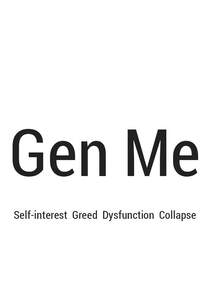
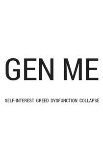

Trade Mark Journal No.2025/045 7 November 2025
UK00004283178 24 October 2025 (9,16,25,35,41)
Mark 1

Mark 2

- Class 9
- Software for creating, managing, displaying, searching and sharing individual profiles, professional profiles, volunteer profiles, social media profiles, job titles, curriculum vitae and references; software for creating, managing, displaying, searching and sharing online individual profiles, professional profiles, community profiles, volunteer profiles, social media profiles, job titles, curriculum vitae and references; software for creating and managing social media profiles, professional profiles, community profiles, organisational profiles, business profiles and volunteer profiles; software for managing, recording and displaying job titles, curriculum vitae and references; software and software applications for managing and displaying social media profiles, citizens profiles, education profiles, learner profiles, practitioner profiles, professional profiles, consultant profiles, leadership profiles, director profiles and governance profiles; software for recording and displaying job titles, job vacancies, voluntary positions, work opportunities, tasks, and work placements; software for managing job vacancies, voluntary positions, work opportunities, tasks, and work placements; software for displaying and managing applications for job vacancies, voluntary positions and work placements; databases, computer applications, software, mobile applications and computer software for connecting together individuals, organisations and communities; software for managing and recording educational activities, voluntary activities, community activities, employment activities, recruitment activities, curriculum vitae and references; software for recruitment and work placement purposes; applications, software, mobile applications and computer software providing intelligent connectivity between individuals, organisations and communities; computer databases, applications and software used to provide indicators, metrics, measures, scores and verbatim feedback data to help guide decision making; education software; community networking software; software for advertising of others; application software for social networking services via internet; communication, networking and social networking software; computer software, computer and mobile applications software; software applications for sharing stories; applications software relating to the provision of news, current affairs, organisation stories, community stories, and topics of general interest; downloadable applications software relating to the provision of news, current affairs, organisation stories, community stories, and topics of general interest; applications software for sharing, data, information, videos, graphics, images, blogs, and web and podcasts relating to the provision of news, current affairs, organisation stories, community stories, and topics of general interest; computer applications software, downloadable; computer software platforms for social networking; podcasts; videocasts; blog software; software; software applications; computer applications; database applications; mobile software; mobile software applications; applications utilising artificial intelligence.
- Class 16
- Printed matter; publications; policy documents; policy guides; standards documents; governance documents; process documents; economics documents; printed research guides; printed case studies and policy guides; printed training materials on leadership, governance, strategy, economics, policy design and policy implementation; printed research material for leaders, economists, psychologists, sociologists, policy designers and change managers; printed training materials for leaders, economists, policy designers and change teams; printed brochures; printed guides; books; textbooks; educational guides; printed education and training materials; printed policy guides for government, councils, communities groups and organisations; printed policy guides for schools, academies, colleges, universities and other educational establishments; event programmes; marketing leaflets and brochures; advertising leaflets and brochures; business cards; letterheads; notepads; posters; printed advertisements printed job profiles; printed job adverts; printed curriculum vitae; printed résumés; printed references; printed awards; printed certificates; paper badges; printed vouchers; printed tokens; printed advertising literature; advertising posters; newsletters; newspapers; news clippings; leaflets; advertisement posters; publications, brochures, leaflets, workbooks, research documents, training materials and instruction guides.
- Class 25
- Clothing; sportswear; headgear.
- Class 35
- Administration and management of groups, communities and political parties; advertising, marketing and promotion of groups, communities and political parties; community administration and management; organisation administration and management; business administration and management; organisation, management and administration of government and government departments; administration and management of think-tanks, consultancies, and economic groups; management and administration of parliament and government, including departments, committees, policy making bodies and law making bodies; government marketing, advertising and promotional services; advertising; marketing; advertising, marketing and promotion of think-tanks, consultancies, and economic groups; providing information relating to employment; providing employment references; providing employment information via curriculum vitae and references; recruitment and employment services; arranging and conducting recruitment fairs; administration, management and display of citizens roles, citizen titles, role descriptions and personal profiles; administration of membership schemes; news and current affairs clipping services; public relations for political purposes; providing ratings to support public decision making, public relations, marketing and advertising; providing user reviews for commercial or advertising purposes; public consultations; opinion polling; public opinion surveys; advertising services; marketing services; promotional services; publicity services; brand strategy services; retail services connected with the sale of books, publications, newspapers, stationery, clothing, sportswear and headgear; information, advisory and consultancy services relating to all the aforesaid.
- Class 41
- Education and training; education; education services; training services, seminars, workshops, forums, and conferences; education, training and research in the advancement of health, wellbeing and sustainability; education, training and research related to the advancement of human skills, hope, humanity, harmony, healing, philosophy, psychology, neuroscience, human development and regenerative practices; education, training and research in leadership, governance, policy design and policy implementation; education and training in business administration, governance, economics and business management; business education and training; education and training programmes in governance and organisational management; leadership research, governance research, education and training; education and training in activism, communications, policy design and change management; education and training of executives, directors, leaders, advisors, auditors, wellbeing practitioners, accountants, consultants, managers and staff; education and training of healthcare staff; education and training in human resource management; education and training in policy design, audit, assessment and certification; education and training in audit practices and assessment; education and training in the conducting of purposeful audits being corporate, wellbeing, environmental, social, governance and policy audits; education and training in conducting purpose audits being corporate, wellbeing, environmental, social and governance audits; education and training in the conducting of wellbeing audits of staff, suppliers, customers, communities and key stakeholders of an organisation; education and training of healthcare practitioners, wellbeing practitioners, school teachers and educators in others educational establishments; issuing of certificates and awards; education and training in policy design and policy implementation; education and training in psychology, sociology, anthropology, ecology, economics, healthcare and wellbeing; wellness training; wellbeing training; wellbeing education; training in health and wellbeing; educational research; education in schools, colleges, academies, universities and other education establishments; educational research in healthcare, leadership, governance, policy design and economics; issuing of certificates and awards; issuing of certificates and awards by training establishments; issuing of awards and certificates to schools, academies, colleges, universities and other educational and research establishments; issuing of awards and certificates by schools, academies, colleges, universities and other educational and research establishments; issuing of educational certificates and awards; issuing, recording and displaying of awards and certificates; providing information relating to schools, academies, colleges, universities and other educational and research establishments; providing information relating to education; education services; school services; college services; university services; educational services provided by schools, colleges and within other educational and research settings; mentoring and coaching; education information services; education within schools, academies, colleges, universities and other educational establishments; education services within schools, academies, colleges, universities and other educational establishments; provision of education and training; education, teaching and training; education and instruction services; education information services; education information; education services; online education services; education services relating to health; educational services related to organisational health; educational services related to business health; educational services related to economic health; arranging of educational events; conducting of educational events; arranging and conducting of educational discussion groups, not on-line; arranging and conducting of in-person educational forums; creation [writing] of podcasts; creation [writing] of educational content for podcasts; online publications, namely blogs; digital video, audio and multimedia entertainment publishing services; entertainment services for sharing audio and video recordings; production of videos; production of training and instruction videos; publishing of instructional books; provision of online training and instruction; information, advisory and consultancy services relating to all the aforesaid.
Good Turns Ltd